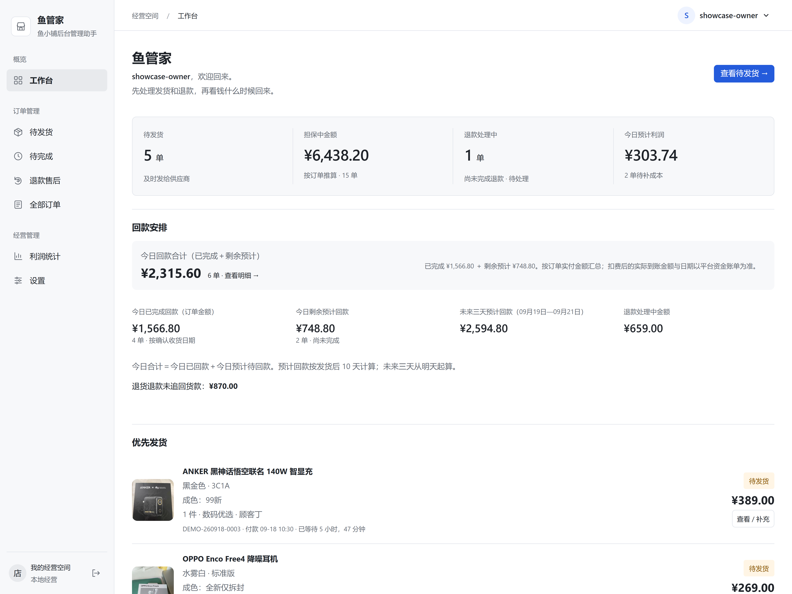
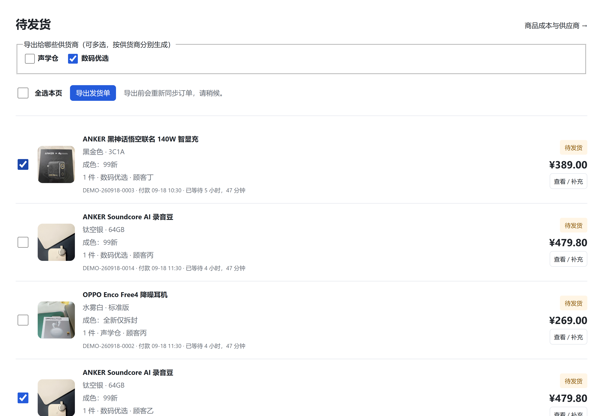
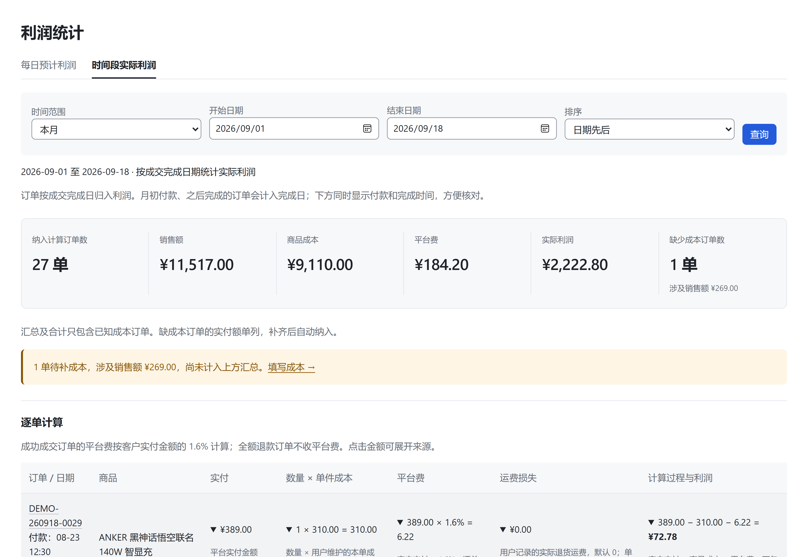

安装 · API 接入 · 日常经营
鱼管家完整使用手册
第一次按顺序完成安装与 API 接入；以后按目录查看订单、发货、核对、售后和利润。全部说明与图片放在这一份手册里。
图文核对：2026-09-29。闲管家配图来自其官方公开手册中的旧版界面，用于辨认入口；菜单、套餐与价格以你登录后看到的页面为准。点击图片可放大。
安装与首次使用
- 从项目发布页下载 Windows 安装程序，双击安装，保留默认选项。
- 首次打开鱼管家，创建自己的店主账号，没有默认账号密码。
- 按照下面的 API 图解接入闲管家。已有 AppKey / AppSecret 时，可直接跳到填入鱼管家。
安装包提供运行所需组件。日常打开桌面“鱼管家”即可使用，无需启动其他软件或配置同步开关。
本手册按新版公版功能编写，公开下载以实际发布的安装包为准。截图中的经营数据是演示数据。
登录，绑定要管理的闲鱼店铺
打开闲管家登录页。没有账号时先注册；已有账号直接登录。
销售管理 → 店铺 → 创建闲鱼店铺
按页面提示完成目标闲鱼店铺的授权。已绑定且授权有效的店铺可跳过这一步。
添加自己的应用
开放平台 → 应用 / 我的应用 → 添加应用 → 我有自研系统
鱼管家采用手动填写 API 的接入方式。按图选择我有自研系统，应用名称可填“鱼管家”。实物订单管理应查看进销存 / ERP类应用，按页面要求完成资料填写。
这里是店主为自己的经营系统添加应用。若页面要求额外资质或没有该入口，先向闲管家客服确认账号是否支持此接入方式。
需要办什么套餐，在哪里订购？
需要的是允许自研应用查询目标店铺订单的接口服务。先进入应用的订购页，查看该应用、该店铺是否已有有效服务；已有权限时无需重复购买。
我的应用 → 订购应用
或：应用详情 → 闲鱼店铺订购情况 → 对应店铺的“订购”
- 选中要接入的应用和店铺，查看可订购的版本。
- 核对版本是否支持自研应用、订单列表与订单详情查询，再选服务期限。
- 核对金额、到期时间和续费条件后自行完成订购；返回应用详情，确认目标店铺的服务有效。
不确定买哪项？复制这段话问闲管家客服
我要把自己的闲鱼实物店铺接入本机鱼管家，采用“我有自研系统”的 AppKey / AppSecret 方式，需要查询授权店铺、订单列表、订单详情和退款信息。请确认我的账号应该订购哪个应用类型和套餐，是否支持上述接口、收费期限及价格，以及应用是否需要上线。请提供对应订购入口。
公开资料未能确认所有账号当前适用的自研套餐名称与现价，因此本手册不列固定价格或要求购买某个等级。
找到 AppKey 和 AppSecret
我的应用 → 刚创建的应用 → 详情 → 应用概况
找到 AppKey 与 AppSecret，分别用旁边的复制按钮取得完整内容。星号是隐藏后的显示，不能把星号当作密钥填写。
若应用仍是“待上线”，按闲管家页面要求完成上线，再核对目标店铺服务是否有效。
图中还包含通用的“消息推送地址”说明。鱼管家通过定时查询自动同步，客户端没有要求你填写推送地址；不要把本机网址填到闲管家。若平台将其列为必填项，先向平台确认自研查询接口的接入要求。
填入两项信息，验证后自动同步
打开鱼管家，登录自己的店主账号。
设置 → 闲管家 API
- 把刚才复制的 AppKey 和 AppSecret 填入同名输入框。
- 点击保存 API 配置。
- 点击验证 API 连接。
无须配置同步开关、编辑文件或安装额外运行环境。密钥保存在本机，保存后不回显。
此行为适用于支持“验证后自动同步”的新版鱼管家安装包；公开下载以实际发布版本为准。
每天先看待办，再看资金安排

| 区域 | 含义 | 建议操作 |
|---|---|---|
| 待发货 | 需要继续安排发出的订单 | 进入待发货，核对商品与供货商 |
| 担保中金额 | 按本地订单状态推算的未完成资金 | 点击进入构成明细；不当作平台钱包可提现余额 |
| 退款处理中 | 尚未完成客户退款的售后 | 进入退款售后，跟进平台处理 |
| 今日预计利润 | 按付款日期及已有成本统计 | 查看缺成本提示并补充 |
回款数字怎么理解
- 今日已完成：今天平台确认收货／完成的订单实付金额。
- 今日剩余预计：依据发货时间和参考天数估算，尚未完成的订单金额；与已完成部分不重复计算。
- 今日合计：上述两部分之和。
- 未来三天：从明天起，预计在随后三天完成的未完成订单。
默认参考日期为发货后 10 × 24 小时。退款中的订单暂停参考；缺少可信发货时间的记录不能硬推日期。平台扣费后的真实到账金额与入账日期，以资金账单为准。实际业务当天没有对应订单时，显示 0 是正常结果，宣传演示数字不作为经营目标。
清单变化提醒
发现最新清单中的订单有变化时，先核对是否退款、改派或已发货，再与供货商确认后重新导出。旧清单保留为历史记录，不应继续作为当前发货依据。
先认准商品，再填成本
入口：设置 → 商品与供应商，或订单列表右上角“商品成本与供应商”。
- 核对商品图片、名称、规格和已有成色。必要时点击“查看关联订单”。
- 参考最近成交售价帮助辨认；售价是销售金额，不是采购成本。
- 填写单件成本，单位为元，数量由订单确定。
- 选择或输入默认供应商；需要时填写供应商微信备注名称和默认发货备注。
- 保存该商品配置，回订单或利润页面检查效果。
| 字段 | 填写示例 | 用途 |
|---|---|---|
| 单件成本 | 150.00 | 两件对应 300 元商品成本，不在这里填写两件合计 |
| 默认供应商 | 数码优选（示例） | 分组生成发货清单；同一家尽量保持名称一致 |
| 微信备注名称 | 数码优选售后（示例） | 帮助店主识别联系人，不会自动发微信 |
| 发货备注 | 核对颜色、配件，发货前拍视频 | 用于后续清单沟通 |
商品成本变更不会直接改写已有订单成本快照。历史某一单成本错了，应进入订单详情，填写“更正本单单件成本”和原因，再保存；不要为改一单而批量重写全部商品价格。
把正确的文字清单交给正确的供货商
入口：左侧“待发货”。该页保持简洁；复杂检索可到“全部订单”。
- 逐单检查商品、规格、数量、供货商以及收货信息是否完整。
- 勾选准备处理的订单。“全选本页”只选择当前页，不等于所有分页。
- 直接导出已选订单即可；如需按供货商筛选，再勾选供货商。不选供货商也能导出发货单。
- 点击“导出发货单”。系统先同步核对，期间稍等，不重复点击。
- 在“清单已生成”页点击“复制整份清单”或“下载 TXT”。
- 通过自己的聊天工具，只把对应文字清单发给该供货商。

清单中包含订单号、商品、已有规格、数量、收货人、电话、地址和备注。正式版不生成公网链接，不接收供货商回填单号或上传视频，也不会因为生成清单而自动向平台提交发货。
页面底部“历史导出批次”可找回以前的清单。旧清单已经提示变化时，应以当前订单和重新导出的清单为准。
待完成、全部订单与订单详情
待完成：发出后继续跟进
在“待完成”查看尚未完成交易的订单。可按等待时间或参考回款日排序，结合搜索、供应商和日期筛选跟进。找不到记录时，先清除筛选，再到“全部订单”按订单号找。
全部订单：检索与核对的入口
- 使用状态标签选择待发货、待完成、已完成、售后或其他分类。
- 搜索订单号、型号或收件人；按需要选择供货商。
- 选择日期依据：下单、付款或完成日期。核对本月成交应使用完成日期。
- 点击“查询”，需要重新开始时“清除筛选”；可导出当前范围订单 CSV。
订单详情：补充本单经营信息
点击订单卡片“查看 / 补充”，核对平台时间、物流、退款进度和计算过程。可补充本单供应商、收货信息、发货备注、退货单号、售后备注、实际退货运费损失等，按页面需要填写后保存。
从旧版升级且曾收到供货商视频时，订单详情会保留只读下载入口；正式版不会新增这类记录。“待核对”说明数据或状态无法可靠判定，不表示缺少商品成本。
待核对订单，怎样处理？
点击订单上的去核对。常见原因是平台状态与退款金额不一致，需要核实事实后再记录。
- 先点击重新同步订单和退款信息，查看最新提示。
- 按同一订单号打开闲鱼退款详情，核对退款是否成功、实际已退金额、是否全额。
- 回到鱼管家填写金额与核对依据，选择符合实际情况的结果，点击保存核对结果。
仅在实际退款等于全部实付、且页面允许确认时选择全额退款。部分退款、仍在处理中或无法确定时，选择保留待核对，不要为了移出列表而强行结案。
填错可撤销人工核对结果；平台后续信息变化时，旧结果会失效并要求重新核对。客户退款与供货商货款追回分别登记。
客户退款与供货商退钱，分别登记
入口：左侧“退款售后”。
| 标签 | 显示范围 |
|---|---|
| 退款处理中 | 平台尚未完成客户退款的订单 |
| 供应商待追回 | 退货退款中供货商货款尚未追回的订单，可包含客户退款处理中或已退款 |
| 客户退款已完成 | 平台确认客户退款成功的订单，无论供货商的钱是否已收回 |
| 查看全部售后 | 包含已经登记追回的历史记录 |
- 先在平台处理客户售后，鱼管家用来跟进进度与经营记录。
- 与供货商核实退货和采购款返还情况；不要把买家退货签收当作自己已经收到钱。
- 收到供货商货款后，在对应订单下拉选择“已追回”，点击“确定”。
- 确认文字变绿；默认待追回列表中，该订单会移出，可在全部售后找回。
- 如果误点，找到原订单改回“未追回”并确认。真实发生退货运费损失时，进入详情按元填写。
待追回金额依赖商品成本。缺成本时先补齐，不能把未知当作零。当前是“未追回 / 已追回”登记，尚不提供完整的部分追回金额流水；只收到部分款项时不要标为全部追回，可先用售后备注记录并继续跟进。
退款清单可以按现有导出入口交给供货商核对；它与待发货的文字清单不同，当前仍可能提供图片形式。
怎样查看、解释并核对利润
入口：左侧“利润统计”。
- 选择“每日预计利润”或“时间段实际利润”。预计按付款日期，实际按成交完成日期。
- 选择今天、本月、上月或自定义范围，必要时设置排序并点击“查询”。
- 先看纳入订单数与缺少成本订单数，再看销售额、成本、费用和利润。
- 到“逐单计算”点击金额，展开实付、成本及费用的来源。
- 补齐缺成本订单或更正错误成本后重新核对；需要留档时导出当前统计明细。
商品成本 = 数量 × 本单单件成本快照
当前平台费参考 = 客户实付 × 1.6%（逐单四舍五入到分）
订单利润 = 客户实付 − 商品成本 − 平台费
示例：200.00 − 150.00 − 3.20 = 46.80 元运费损失单列，不直接混入上述成交利润公式。该公式不包含全部税费、人工、房租等支出。当前 1.6% 是程序的计算口径，不是通用店铺实际费率；不同费率或历史费率应先核对，界面暂未提供通用费率编辑器。

为什么某月初订单没算进来
按顺序检查：平台是否已经完成交易 → 完成日期是否落在所选月 → 本地是否已同步或导入 → 是否缺成本 → 是否属于非经营或待核对记录。付款在月初但下月完成的订单，会在下月实际利润中出现。不要仅凭下单日期判断漏算。
从闲管家同步历史订单
入口：设置 → 闲管家 API → 同步并导入闲管家历史订单。鱼管家不再接收本地 CSV 或 Excel 订单文件，避免两套导入口径产生重复、状态不一致和字段缺失。
- 先在闲管家完成历史订单导入，并确认订单号、金额、状态和时间正确。
- 回到鱼管家点击“同步并导入闲管家历史订单”。已有订单按店铺和订单号去重，不会重复创建。
- 稍后刷新同步页面，在运行记录中查看扫描数量、历史数量和已导入历史数量。
- 到“全部订单”按订单号抽查；缺成本、字段冲突或平台信息不足的订单会保留为待核对，不会猜造数据。
闲管家订单列表接口按更新时间查询，当前只能扫描近 179 天并且单次最多 10000 条。较早订单只有在导入闲管家后产生了近期更新时间时才可能返回；数量过多时先在闲管家分批整理再重试。
日常配置与账号管理
| 设置入口 | 用途与注意事项 |
|---|---|
| 闲管家 API | 填写并保存 AppKey / AppSecret、验证 API 连接、同步当前及历史订单、查看自动同步状态和运行记录 |
| 商品与供应商 | 维护成本及默认供货商信息 |
| 我的账号 | 修改用户名、称呼和密码；修改用户名或密码需填写当前密码，新密码留空则不更改 |
| 本地店铺与备份 | 店铺资料与备份恢复说明；实际备份按部署方式执行 |
| 操作记录 | 回查成本更正、账号和售后相关记录 |
| 统一回款参考规则 | 修改发货后参考天数，默认 10，可填 1—365；修改后影响预计，不改平台实际完成时间 |
| 清单图片保管 | 设置导出图片保留天数，留空长期保留 |
顶部显示当前登录用户，优先显示“你的称呼”，未填写时用用户名；账号菜单可进入设置和退出。
忘记密码且无法登录时，当前没有面向公众的邮箱自助找回流程。由有权维护本机的人协助，通过对应部署环境的 Django 管理命令重设指定账号密码；不要重新初始化数据库。
退出、备份与升级
关闭窗口：鱼管家仍在托盘运行并继续同步。需要完全停止时，右击托盘图标，选择“彻底退出”；下次启动后继续同步。
升级或换电脑前，先备份
- 停止编辑，等待正在运行的同步完成，再从托盘彻底退出。
- 按 Win+R，输入
%LOCALAPPDATA%，将整个XianyuSeller文件夹复制到另一块磁盘。 - 重新打开鱼管家，或运行新版安装程序升级。
迁移与恢复请由维护人员协助验证，确认新电脑能读取订单与配置后再处理旧数据。保留原始备份。
遇到问题再看
验证失败
先检查两项凭据是否来自同一个应用、是否复制完整，再核对应用状态、目标店铺授权和订购有效期。更正后保存并验证。反馈时提供页面错误提示，隐藏密钥与客户信息。
连接成功，暂时没有订单
等待首次同步完成，到“全部订单”清除筛选查看。需要接入前的历史订单时，先导入闲管家，再在鱼管家的 API 页面点击“同步并导入闲管家历史订单”。
关闭窗口、断网或更换 API
关闭窗口后继续后台同步；彻底退出或关机后暂停，下次启动继续。断网后自动重试。更换 API 时重新保存并验证，成功后自动恢复同步。
旧版要求确认首次接入日期
这是旧数据缺少可信接入日期的提示。按页面确认实际日期即可，不需要另外开启同步。